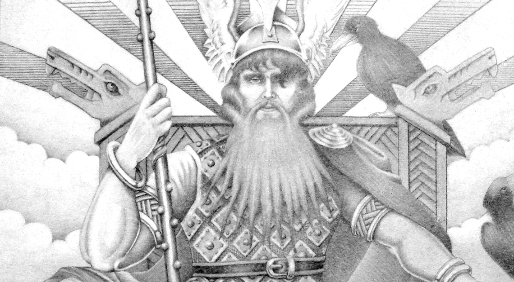
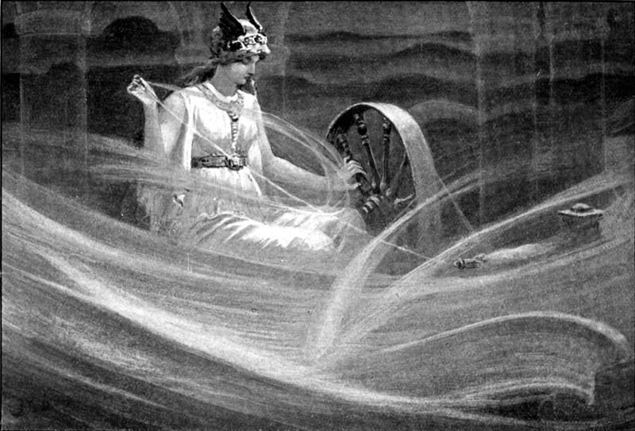
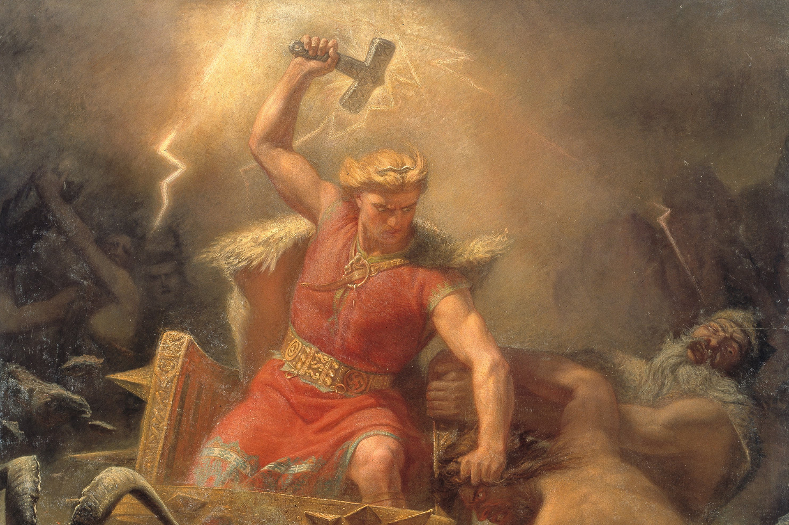
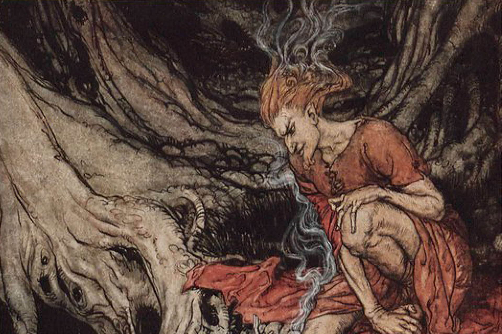
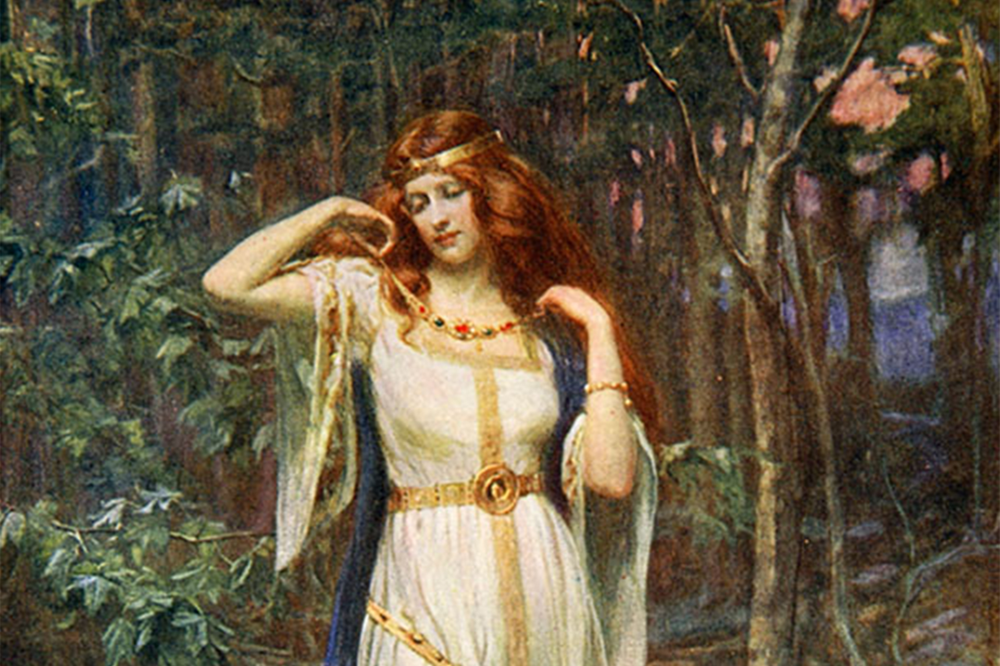
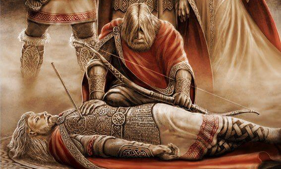

GODS NORDIC
Odin
The Norse gods were separated into two main groups, the Æsir and the Vanir, who at one point in their histories engaged in a fierce and bitter war. Odin was the King of the Æsir clan and known as 'the father of all gods'. He was often depicted as a one-eyed, bearded old man wearing a hat and a cloak, who rode a flying eight-legged horse called Sleipnir.
Frigg
As the wife of Odin, Frigg was regarded as the Queen of the Æsir gods and therefore possibly the most important of all the Norse goddesses. She was the only one allowed to sit next to her husband and although he conducted many extra-marital affairs, she always stuck by her partner.
Thor
Thanks to the Marvel Universe, Thor is one of the most famous and recognisable Norse gods in today’s world. He was the god of thunder and lightning who wielded the Mjölnir, a devastatingly powerful hammer that could slay giants and smash mountains. He rode a chariot drawn by two massive goats called Tanngniost and Tanngrisnir.
Loki
Another god made famous in modern times thanks to his inclusion in the Marvel movies, although in Norse mythology he wasn’t the son of Odin and brother of Thor as the films have made out. Instead, he was considered a ‘blood brother’ of Odin who lived amongst the Æsir.
Freya
Freya was the goddess of fate, love, beauty, gold, war and fertility. She was a member of the Vanir and ruled over the heavenly meadow of Fólkvangr, where half of all those who died in combat would go, whilst the other half were guided by the Valkyries to Valhalla which was ruled over by Odin.
Blader
Another son of Odin and half-brother to Thor, Balder was the god of light and purity. He was described as a fair, kind and handsome god, whose beauty was unparalleled. Often praised by others for his mercifulness, Balder was the epitome of all things wise and good.
Hel
The daughter of Loki, Hel presided over the Norse underworld, a place where all those Vikings who
didn’t die in battle went.
Half of her body was flesh and blood, the other half was just bones. Her decaying features befitted
a goddess who ruled over the land of the dead, judging and deciding the fate of the souls who
entered her realm. It was said that within the underworld she was more powerful than Odin himself, a
belief that was reinforced when she held the final say on what happened to Balder’s soul after he
was slain.